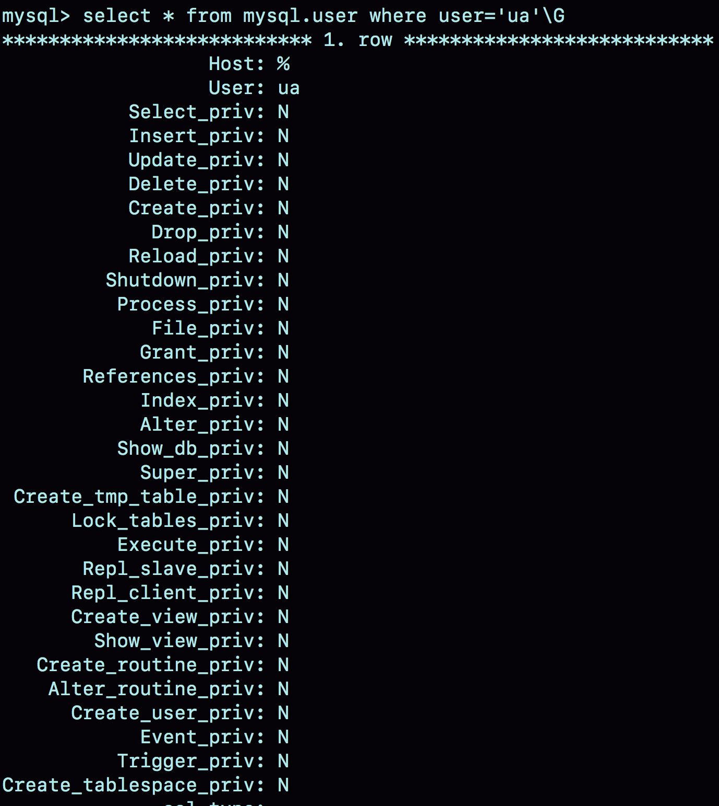
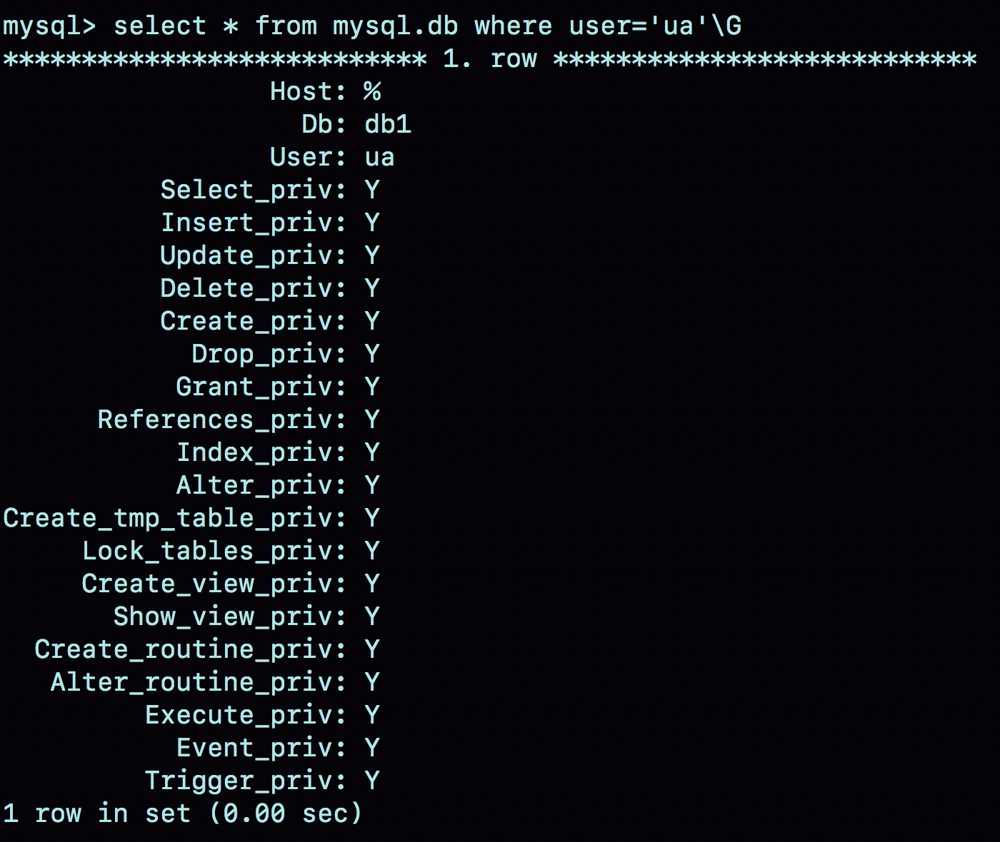
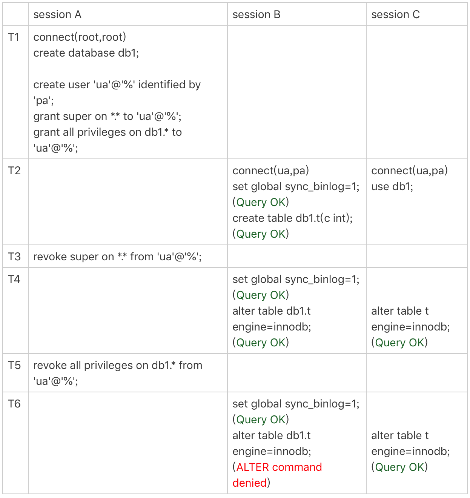
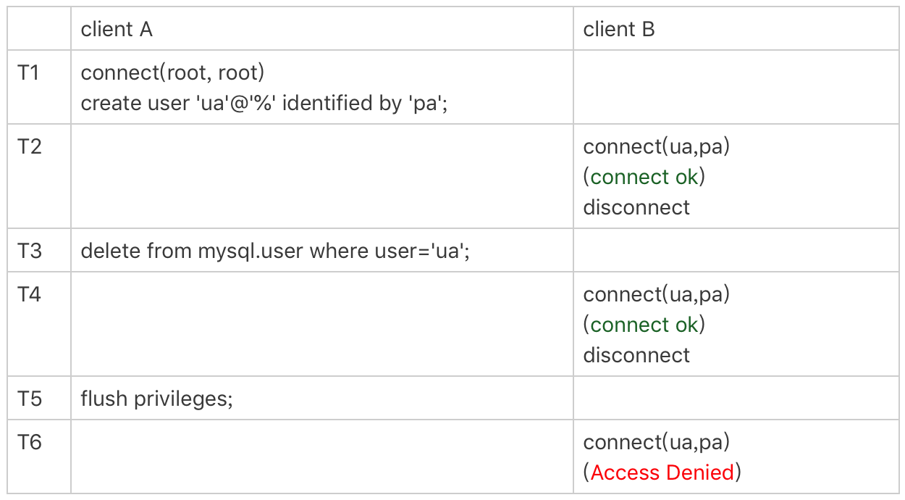
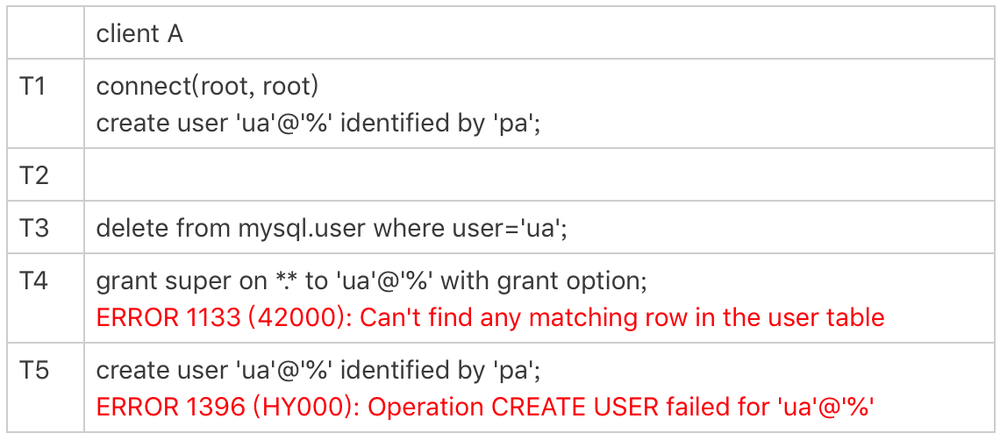

- 00 开篇词 这一次，让我们一起来搞懂MySQL.md
- 01 基础架构：一条SQL查询语句是如何执行的？.md
- 02 日志系统：一条SQL更新语句是如何执行的？.md
- 03 事务隔离：为什么你改了我还看不见？.md
- 04 深入浅出索引（上）.md
- 05 深入浅出索引（下）.md
- 06 全局锁和表锁 ：给表加个字段怎么有这么多阻碍？.md
- 07 行锁功过：怎么减少行锁对性能的影响？.md
- 08 事务到底是隔离的还是不隔离的？.md
- 09 普通索引和唯一索引，应该怎么选择？.md
- 10 MySQL为什么有时候会选错索引？.md
- 11 怎么给字符串字段加索引？.md
- 12 为什么我的MySQL会“抖”一下？.md
- 13 为什么表数据删掉一半，表文件大小不变？.md
- 14 count()这么慢，我该怎么办？.md
- 15 答疑文章（一）：日志和索引相关问题.md
- 16 “order by”是怎么工作的？.md
- 17 如何正确地显示随机消息？.md
- 18 为什么这些SQL语句逻辑相同，性能却差异巨大？.md
- 19 为什么我只查一行的语句，也执行这么慢？.md
- 20 幻读是什么，幻读有什么问题？.md
- 21 为什么我只改一行的语句，锁这么多？.md
- 22 MySQL有哪些“饮鸩止渴”提高性能的方法？.md
- 23 MySQL是怎么保证数据不丢的？.md
- 24 MySQL是怎么保证主备一致的？.md
- 25 MySQL是怎么保证高可用的？.md
- 26 备库为什么会延迟好几个小时？.md
- 27 主库出问题了，从库怎么办？.md
- 28 读写分离有哪些坑？.md
- 29 如何判断一个数据库是不是出问题了？.md
- 30 答疑文章（二）：用动态的观点看加锁.md
- 31 误删数据后除了跑路，还能怎么办？.md
- 32 为什么还有kill不掉的语句？.md
- 33 我查这么多数据，会不会把数据库内存打爆？.md
- 34 到底可不可以使用join？.md
- 35 join语句怎么优化？.md
- 36 为什么临时表可以重名？.md
- 37 什么时候会使用内部临时表？.md
- 38 都说InnoDB好，那还要不要使用Memory引擎？.md
- 39 自增主键为什么不是连续的？.md
- 40 insert语句的锁为什么这么多？.md
- 41 怎么最快地复制一张表？.md
- 42 grant之后要跟着flush privileges吗？.md
- 43 要不要使用分区表？.md
- 44 答疑文章（三）：说一说这些好问题.md
- 45 自增id用完怎么办？.md
- 我的MySQL心路历程.md
- 结束语 点线网面，一起构建MySQL知识网络.md
42 grant之后要跟着flush privileges吗？
在 MySQL 里面，grant 语句是用来给用户赋权的。不知道你有没有见过一些操作文档里面提到，grant 之后要马上跟着执行一个 flush privileges 命令，才能使赋权语句生效。我最开始使用 MySQL 的时候，就是照着一个操作文档的说明按照这个顺序操作的。
那么，grant 之后真的需要执行 flush privileges 吗？如果没有执行这个 flush 命令的话，赋权语句真的不能生效吗？
接下来，我就先和你介绍一下 grant 语句和 flush privileges 语句分别做了什么事情，然后再一起来分析这个问题。
为了便于说明，我先创建一个用户：
create user 'ua'@'%' identified by 'pa';
这条语句的逻辑是创建一个用户’ua’@’%’，密码是 pa。注意，在 MySQL 里面，用户名 (user)+ 地址 (host) 才表示一个用户，因此 ua@ip1 和 ua@ip2 代表的是两个不同的用户。
这条命令做了两个动作：
- 磁盘上，往 mysql.user 表里插入一行，由于没有指定权限，所以这行数据上所有表示权限的字段的值都是 N；
- 内存里，往数组 acl_users 里插入一个 acl_user 对象，这个对象的 access 字段值为 0。
图 1 就是这个时刻用户 ua 在 user 表中的状态。

图 1 mysql.user 数据行
在 MySQL 中，用户权限是有不同的范围的。接下来，我就按照用户权限范围从大到小的顺序依次和你说明。
全局权限
全局权限，作用于整个 MySQL 实例，这些权限信息保存在 mysql 库的 user 表里。如果我要给用户 ua 赋一个最高权限的话，语句是这么写的：
grant all privileges on *.* to 'ua'@'%' with grant option;
这个 grant 命令做了两个动作：
- 磁盘上，将 mysql.user 表里，用户’ua’@’%‘这一行的所有表示权限的字段的值都修改为‘Y’；
- 内存里，从数组 acl_users 中找到这个用户对应的对象，将 access 值（权限位）修改为二进制的“全 1”。
在这个 grant 命令执行完成后，如果有新的客户端使用用户名 ua 登录成功，MySQL 会为新连接维护一个线程对象，然后从 acl_users 数组里查到这个用户的权限，并将权限值拷贝到这个线程对象中。之后在这个连接中执行的语句，所有关于全局权限的判断，都直接使用线程对象内部保存的权限位。
基于上面的分析我们可以知道：
- grant 命令对于全局权限，同时更新了磁盘和内存。命令完成后即时生效，接下来新创建的连接会使用新的权限。
- 对于一个已经存在的连接，它的全局权限不受 grant 命令的影响。
需要说明的是，一般在生产环境上要合理控制用户权限的范围。我们上面用到的这个 grant 语句就是一个典型的错误示范。如果一个用户有所有权限，一般就不应该设置为所有 IP 地址都可以访问。
如果要回收上面的 grant 语句赋予的权限，你可以使用下面这条命令：
revoke all privileges on *.* from 'ua'@'%';
这条 revoke 命令的用法与 grant 类似，做了如下两个动作：
- 磁盘上，将 mysql.user 表里，用户’ua’@’%‘这一行的所有表示权限的字段的值都修改为“N”；
- 内存里，从数组 acl_users 中找到这个用户对应的对象，将 access 的值修改为 0。
db 权限
除了全局权限，MySQL 也支持库级别的权限定义。如果要让用户 ua 拥有库 db1 的所有权限，可以执行下面这条命令：
grant all privileges on db1.* to 'ua'@'%' with grant option;
基于库的权限记录保存在 mysql.db 表中，在内存里则保存在数组 acl_dbs 中。这条 grant 命令做了如下两个动作：
- 磁盘上，往 mysql.db 表中插入了一行记录，所有权限位字段设置为“Y”；
- 内存里，增加一个对象到数组 acl_dbs 中，这个对象的权限位为“全 1”。
图 2 就是这个时刻用户 ua 在 db 表中的状态。

图 2 mysql.db 数据行
每次需要判断一个用户对一个数据库读写权限的时候，都需要遍历一次 acl_dbs 数组，根据 user、host 和 db 找到匹配的对象，然后根据对象的权限位来判断。
也就是说，grant 修改 db 权限的时候，是同时对磁盘和内存生效的。
grant 操作对于已经存在的连接的影响，在全局权限和基于 db 的权限效果是不同的。接下来，我们做一个对照试验来分别看一下。

图 3 权限操作效果
需要说明的是，图中 set global sync_binlog 这个操作是需要 super 权限的。
可以看到，虽然用户 ua 的 super 权限在 T3 时刻已经通过 revoke 语句回收了，但是在 T4 时刻执行 set global 的时候，权限验证还是通过了。这是因为 super 是全局权限，这个权限信息在线程对象中，而 revoke 操作影响不到这个线程对象。
而在 T5 时刻去掉 ua 对 db1 库的所有权限后，在 T6 时刻 session B 再操作 db1 库的表，就会报错“权限不足”。这是因为 acl_dbs 是一个全局数组，所有线程判断 db 权限都用这个数组，这样 revoke 操作马上就会影响到 session B。
这里在代码实现上有一个特别的逻辑，如果当前会话已经处于某一个 db 里面，之前 use 这个库的时候拿到的库权限会保存在会话变量中。
你可以看到在 T6 时刻，session C 和 session B 对表 t 的操作逻辑是一样的。但是 session B 报错，而 session C 可以执行成功。这是因为 session C 在 T2 时刻执行的 use db1，拿到了这个库的权限，在切换出 db1 库之前，session C 对这个库就一直有权限。
表权限和列权限
除了 db 级别的权限外，MySQL 支持更细粒度的表权限和列权限。其中，表权限定义存放在表 mysql.tables_priv 中，列权限定义存放在表 mysql.columns_priv 中。这两类权限，组合起来存放在内存的 hash 结构 column_priv_hash 中。
这两类权限的赋权命令如下：
create table db1.t1(id int, a int);
grant all privileges on db1.t1 to 'ua'@'%' with grant option;
GRANT SELECT(id), INSERT (id,a) ON mydb.mytbl TO 'ua'@'%' with grant option;
跟 db 权限类似，这两个权限每次 grant 的时候都会修改数据表，也会同步修改内存中的 hash 结构。因此，对这两类权限的操作，也会马上影响到已经存在的连接。
看到这里，你一定会问，看来 grant 语句都是即时生效的，那这么看应该就不需要执行 flush privileges 语句了呀。
答案也确实是这样的。
flush privileges 命令会清空 acl_users 数组，然后从 mysql.user 表中读取数据重新加载，重新构造一个 acl_users 数组。也就是说，以数据表中的数据为准，会将全局权限内存数组重新加载一遍。
同样地，对于 db 权限、表权限和列权限，MySQL 也做了这样的处理。
也就是说，如果内存的权限数据和磁盘数据表相同的话，不需要执行 flush privileges。而如果我们都是用 grant/revoke 语句来执行的话，内存和数据表本来就是保持同步更新的。
因此，正常情况下，grant 命令之后，没有必要跟着执行 flush privileges 命令。
flush privileges 使用场景
那么，flush privileges 是在什么时候使用呢？显然，当数据表中的权限数据跟内存中的权限数据不一致的时候，flush privileges 语句可以用来重建内存数据，达到一致状态。
这种不一致往往是由不规范的操作导致的，比如直接用 DML 语句操作系统权限表。我们来看一下下面这个场景：

图 4 使用 flush privileges
可以看到，T3 时刻虽然已经用 delete 语句删除了用户 ua，但是在 T4 时刻，仍然可以用 ua 连接成功。原因就是，这时候内存中 acl_users 数组中还有这个用户，因此系统判断时认为用户还正常存在。
在 T5 时刻执行过 flush 命令后，内存更新，T6 时刻再要用 ua 来登录的话，就会报错“无法访问”了。
直接操作系统表是不规范的操作，这个不一致状态也会导致一些更“诡异”的现象发生。比如，前面这个通过 delete 语句删除用户的例子，就会出现下面的情况：

图 5 不规范权限操作导致的异常
可以看到，由于在 T3 时刻直接删除了数据表的记录，而内存的数据还存在。这就导致了：
- T4 时刻给用户 ua 赋权限失败，因为 mysql.user 表中找不到这行记录；
- 而 T5 时刻要重新创建这个用户也不行，因为在做内存判断的时候，会认为这个用户还存在。
小结
今天这篇文章，我和你介绍了 MySQL 用户权限在数据表和内存中的存在形式，以及 grant 和 revoke 命令的执行逻辑。
grant 语句会同时修改数据表和内存，判断权限的时候使用的是内存数据。因此，规范地使用 grant 和 revoke 语句，是不需要随后加上 flush privileges 语句的。
flush privileges 语句本身会用数据表的数据重建一份内存权限数据，所以在权限数据可能存在不一致的情况下再使用。而这种不一致往往是由于直接用 DML 语句操作系统权限表导致的，所以我们尽量不要使用这类语句。
另外，在使用 grant 语句赋权时，你可能还会看到这样的写法：
grant super on *.* to 'ua'@'%' identified by 'pa';
这条命令加了 identified by ‘密码’， 语句的逻辑里面除了赋权外，还包含了：
- 如果用户’ua’@’%‘不存在，就创建这个用户，密码是 pa；
- 如果用户 ua 已经存在，就将密码修改成 pa。
这也是一种不建议的写法，因为这种写法很容易就会不慎把密码给改了。
“grant 之后随手加 flush privileges”，我自己是这么使用了两三年之后，在看代码的时候才发现其实并不需要这样做，那已经是 2011 年的事情了。
去年我看到一位小伙伴这么操作的时候，指出这个问题时，他也觉得很神奇。因为，他和我一样看的第一份文档就是这么写的，自己也一直是这么用的。
所以，今天的课后问题是，请你也来说一说，在使用数据库或者写代码的过程中，有没有遇到过类似的场景：误用了很长时间以后，由于一个契机发现“啊，原来我错了这么久”？
你可以把你的经历写在留言区，我会在下一篇文章的末尾选取有趣的评论和你分享。感谢你的收听，也欢迎你把这篇文章分享给更多的朋友一起阅读。
上期问题时间
上期的问题是，MySQL 解析 statement 格式的 binlog 的时候，对于 load data 命令，解析出来为什么用的是 load data local。
这样做的一个原因是，为了确保备库应用 binlog 正常。因为备库可能配置了 secure_file_priv=null，所以如果不用 local 的话，可能会导入失败，造成主备同步延迟。
另一种应用场景是使用 mysqlbinlog 工具解析 binlog 文件，并应用到目标库的情况。你可以使用下面这条命令 ：
mysqlbinlog $binlog_file | mysql -h$host -P$port -u$user -p$pwd
把日志直接解析出来发给目标库执行。增加 local，就能让这个方法支持非本地的 $host。
© 2019 - 2023 Liangliang Lee. Powered by gin and hexo-theme-book.